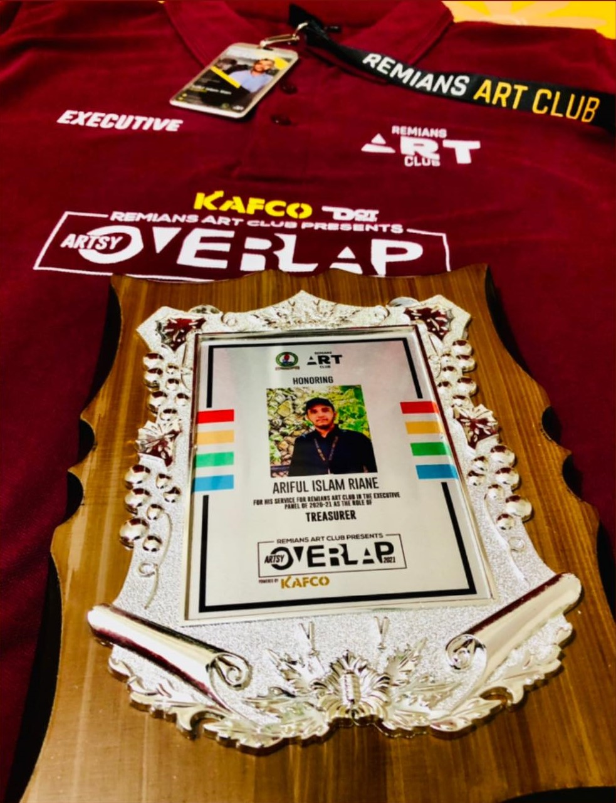

-An Undergraduate student; Empowering Journeys, Enhancing Technology.
Hello! I'm Ariful Riane, a Computer Science student at Dublin City University (DCU) with a strong interest in software engineering, full-stack development, and artificial intelligence. I enjoy solving complex problems and building practical applications that deliver meaningful, user-centered experiences.
Alongside my studies, I work in enterprise IT support, where I have developed strong technical troubleshooting, communication, and collaboration skills while supporting users in a fast-paced environment. This experience has strengthened my ability to think analytically, adapt quickly, and deliver effective solutions under pressure.
I am continuously expanding my knowledge of modern software development, cloud computing, databases, and AI technologies through academic coursework, personal projects, and hands-on experience. I enjoy learning new technologies, tackling challenging problems, and creating software that is scalable, reliable, and impactful.
I am currently seeking software engineering internship opportunities where I can contribute to real-world projects, collaborate with experienced engineers, and continue growing as a developer while making a meaningful impact.
```South Dublin County Council (SDCC) June 2026 - Present
As an IT Intern at South Dublin County Council, I support the organisation's IT infrastructure by assisting with technical support, device deployment, system administration, and end-user services. Working within a large public-sector IT environment has strengthened my analytical thinking, troubleshooting abilities, and understanding of enterprise technologies.
Dublin Airport | OCS July 2024 - June 2026
As a Customer Assistance Agent at Dublin Airport with OCS, I help passengers with limited mobility to have a smooth and comfortable travel experience. This includes working closely with airline staff and teammates to make sure passengers board, transfer, and disembark on time, while providing friendly customer service and following safety guidelines.
Spar Dutch Village May 2023 - Aug 2023
As a part-time employee at Spar Dutch Village, I gained experience with customer service, stocking shelves, and keeping the store organized. I assist customers with their needs and make sure everything runs smoothly. This job has helped me build good communication and teamwork skills in a busy environment.
